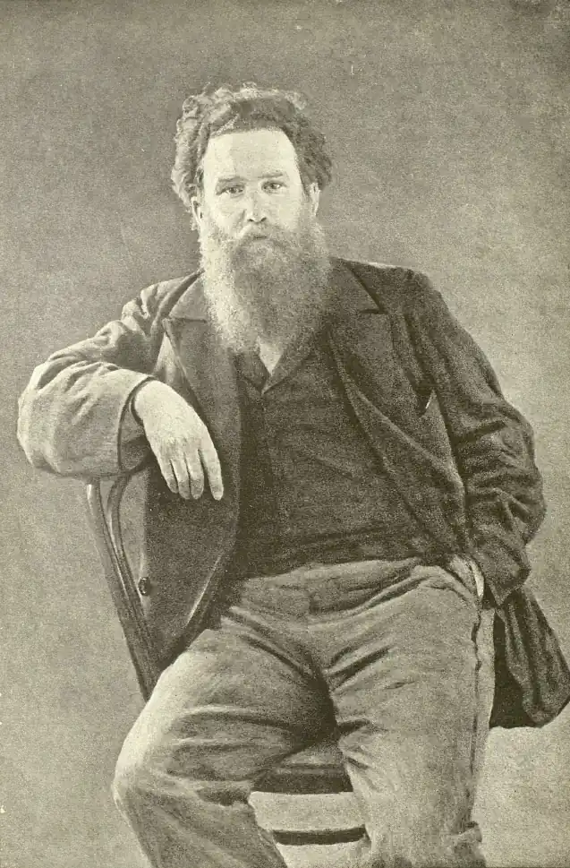

Короленко Володимир Галактіонович — видатний письменник, публіцист і громадський діяч, за походженням — українець.
Народився 27 липня 1853 р. в м. Житомирі в родині повітового судді Галактіона Опанасовича Короленка, відомого в Житомирі своєю чесністю, безкорисливістю, відданістю законам. Мати Евеліна Скуревич відзначалась високими душевними якостями. Діти зростали в атмосфері любові, поваги і взаємопідтримки. Це безперечно вплинуло на формування світогляду майбутнього письменника, його високих моральних якостей як людини і громадянина. Дитинство та юність Короленко провів на Волині, у своєрідній обстановці маленьких містечок, де стикаються три народності: польська, українська та єврейська, і де бурхливе та довге історичне життя залишило ряд спогадів і слідів, сповнених романтичної чарівності. Спочатку В.Г. Короленко вчився в приватному пансіоні, а потім в 1-ій Житомирській гімназії.
В 1866 році Г. О. Короленка перевели спочатку в Дубно, а потім у Рівне, бо Дубно не мало гімназії і губернське начальство пішло назустріч проханню Короленка. В цьому ж році Володимир Короленко поступає до Рівненської приватної гімназії, яку закінчив у 1871 році із срібною медаллю. Про побут юного Короленка у Рівному написано вже чимало. Прикметно, що сам письменник докладно зобразив і гімназію, і родинне оточення, і життя міста того часу у своїх повістях, нарисах, оповіданнях. Особливо — "Історії мого сучасника", де ці спогади є часткою життєпису героя в контексті його незатишної і багатої на неправду доби. Гімназійні враження Короленка були переважно важкими. Дитячу душу ранили кричуща несправедливість, зневажання гідності учнів, примітивне шпигунство наглядача Дитяткевича, байдужість учителів. Засилля рутини робило навчання нецікавим і нудним, а постійний страх перед покараннями, які чекали на гімназистів на кожному кроці, викликали ненависть та зневагу до гімназійних службовців. Щоправда, серед учителів Володимир Короленко пізнав і таких, котрі запам'яталися йому на все життя благородством та добром. Таким був зокрема викладач російської словесності Веніамін Авдієв. Він працював у гімназії недовго, лише протягом одного року (1869-70), його гідна та незалежна поведінка була несумісною із тогочасними порядками в реальній гімназії. Зате на Короленка Авдієв справив надзвичайно великий вплив. Пізніше сам письменник визнавав це, згадуючи, що завдячує вчителеві своїм відкриттям російської літератури. Адже під час занять Веніамін Авдієв читав учням багато позапрограмних творів. Якось, згадував письменник, — він зайшов у клас серйозним та похмурим: "У нас вимагають присилання творів за чверть для перегляду в округ, — сказав він, наголошуючи — За ними будуть судити не тільки про ваш виклад, але і про спосіб ваших думок. Я хочу нагадати, що наша програма завершується Пушкіним. Усе, що я вам читав із Лєрмонтова, Тургенєва, особливо Некрасова, не кажучи про Шевченка, у програму не входить". Нічого більше він нам не сказав, і ми не запитували... Читання нових письменників продовжувалось, але ми розуміли, що все те, що будило в нас стільки нових почуттів і думок, хтось хоче відняти від нас; комусь потрібно зачинити вікно, через котре лилося стільки світла і повітря, яке освіжало застійну гімназійну атмосферу... Веніамін Авдієв належав до покоління, що виховувалося на народницьких ідеалах. У своїх учнях він бачив насамперед людей, прагнув виховати в них благородні устремління, співчуття до кривди, працьовитість. Він, викладач літератури, був свідомий того, якою могутньою духовною зброєю може бути слово. Не тільки на заняттях читав він гімназистам заборонених авторів. Юному Короленкові доводилося бувати і в квартирі вчителя, коли той запрошував вихованців на чай. Там гарно співалися українські пісні, а ще вчитель читав напам'ять улюбленого Шевченка, який вражав майбутнього письменника якоюсь "безпредметною тугою за чимось невиразним, як гомін степового вітру на козацькій могилі". Саме у Рівному Короленко вперше відчув у собі літературний талант, поклик до слова. Одного осіннього вечора він блукав вулицями міста. І чим більше вглядався в цей невибагливий пейзаж, в обличчя заклопотаних людей навколо, тим ясніше уявляв собі, як опише це життя... "Ось у цій суцільній вологій темряві, безладно всіяній вогниками, за ними освітленими віконцями живуть люди. Зараз вони п'ють чай або вечеряють, розмовляють, сваряться, сміються... Можливо, у всьому місті я один стою ось тут, вдивляючись у ці вогні й тіні, один думаю про них, один бажав би зобразити і цю природу, і цих людей так, щоб усе те було правдою і щоб кожен знайшов тут своє місце". У нашому місті гімназист Володя Короленко відкрив для себе зовсім інший світ, від якого раніше бридливо відвертався. Це був світ, який починався потойбіч від ситого міщанського життя, — світ злиднів, жебраків, бездомних сиріт, блазнів та волоцюг. Але і цей світ, як виявилося, жив за людськими законами чи принаймні — прагнув жити. Ці люди були обездолені не лише власною волею, а передусім — волею жорстоких обставин. Саме вони стануть у майбутньому колоритними персонажами його оповідань — паном Тибурцієм, Туркевичем, Лавровським. Рівняни могли легко пізнати прототипів цих персонажів: вони неодноразово зустрічали їх у занедбаних кварталах. Можна було пізнати й місце подій, бо письменник з натури змальовував нудне провінційне містечко, в центрі якого знаходилися романтичні руїни палацу, оточені заболоченим ставом. Або маленьку запустілу капличку на Вольському Цвинтарі, яка є місцем дії в оповіданні "Діти підземелля". Рівне стало для молодого Короленка хай і поганою, але необхідною життєвою школою. Вийшовши зі стін гімназії, він їде до Петербурга здобувати вищу освіту. Це був типовий шлях "у люди" людини його соціального походження і здібностей, із численними труднощами та невдачами. На чужині згадувалася гарна біла споруда Рівненської гімназії та мальовнича зелень довкруг неї, серед якої так любили бавитися юні гімназисти. Після закінчення гімназії в 1871 році Короленко вступив до Петербурзького технологічного інституту. В 1874 році, завдяки старанням енергійної матері, йому пощастило перебратися до Москви та вступити стипендіатом до Петровської земельної й лісової академії. У 70-х рр. зблизився з діячами революційного народництва. За участь у студентських заворушеннях його було виключено з академії і вислано з Москви. Пізніше, як політично неблагонадійного його було заарештовано і вислано спочатку у В'ятську губернію, потім до Сибіру. Майже 10 років провів Короленко у засланні. Але це не зломило письменника. Саме в засланні починається його літературна діяльність. Після заслання В. Короленко жив у Нижньому Новгороді, Петербурзі, останні 20 років свого життя — в Полтаві. Короленко швидко включився у літературно-громадське життя Полтавщини. Налагодив дружні стосунки з діячами української культури — Панасом Мирним, М. Коцюбинським, І. Тобілевичем, X. Алчевською, Г. Хоткевичем та ін. Роки життя у Полтаві були заповнені інтенсивною творчою роботою. Тут він завершив нариси "У козаків", писав другий цикл сибірських оповідань ("Мороз", "Феодали" та ін.), оповідання "Мить" і "Не страшне". П'ять останніх років життя письменника збіглися з Жовтневою революцією і громадянською війною. Він не сприймає більшовицького терору, вважаючи силові методи зайвою жорстокістю. Погляди письменника ґрунтувалися не на класовому підході, а на загальнолюдських принципах моралі. Помер 25 грудня 1921 року в Полтаві, де і похований. Творча спадщина письменника велика і багатогранна. Він автор чотирьохтомної "Історії мого сучасника", відомих повістей "Сліпий музикант", "В дурному товаристві", "Без язика", багатьох оповідань, нарисів, публіцистичних і критичних статей. Одна з головних тем художньої творчості Короленка — шлях до "справжнього" народу. Роздуми про народ тісно пов'язані з питанням, яке проходить через багато його творів. "Для чого створено людину? — так стоїть питання в оповіданні "Парадокс". "Людина народжена для щастя, як птах для польоту", — відповідає в цьому творі істота, спотворена долею. Яким би ворожим не було життя, "все ж таки попереду — вогні!" — писав Короленко у вірші в прозі "Вогники". Так Короленко утверджує своє розуміння щастя. Будучи людиною непідкупної громадянської чесності, передових ідей і мужнього характеру, Володимир Галактіонович не мирився з гнівом і свавіллям. Він сміливо брав під свій захист пригнічених і знедолених, виступав проти національної ворожнечі, будив суспільну свідомість. Письменник Короленко навічно прославив своє ім'я, як мужній і безкорисливий захисник простого народу. У боротьбі за правду, справедливість і свободу, він ніколи не йшов ні на які компроміси. Слово у нього ніколи не розходилося з ділом. Недарма один з дослідників літератури А. Г. Горифельд у 1918 році писав: "Про кращий твір Короленка навряд чи можна сперечатися: кращий його твір не "Сон Макара", не "Мороз", не "Без язика". Кращий його твір — він сам, його життя, його істота". З почуттям невимовної гордості, Короленко писав про відвагу та мужність народу України, про його талановитість. Але поряд з письменницькою діяльністю Короленко вів активну громадську діяльність. Протягом усього свого життя він виступав проти насильства і несправедливості, відстоював рівноправність народів, захищав право національних меншин, викривав прояви націоналізму і шовінізму всіх мастей. В річницю 145-річчя від дня народження В. Короленка Єврейською Радою України йому було присвоєно звання "Праведник України". Так вдячні нащадки увічнили пам'ять гарячого захисника людини від рабства, зла і неправди, свободи і гідності національних меншин. В Україні глибоко шанують Володимира Галактіоновича Короленка, свято бережуть пам'ять про великого праведника XX ст. Ім'я Короленка надано Полтавському національному педагогічному університету, Харківській державній науковій бібліотеці, Чернігівській обласній бібліотеці, школам у Полтаві та Житомирі. В Полтаві і Житомирі відкрито музеї Короленка. Також у Полтаві є Народний дім імені Володимира Короленка. 1990 року Спілка письменників України встановила літературну премію імені Короленка за найкращий твір, написаний російськомовними літераторами України. Екранізовано повість "Сліпий музикант" (1960 рік, Київська кіностудія імені Олександра Довженка, режисер-постановник Т. Лукавневич). За його повістю "В дурном обществе" створено фільм К.Муратової "Серед сірого каміння" (1983). Йому присвячено документальну стрічку "Пам'яті В. Г. Короленка" (1956). Ім'я В. Г. Короленка назавжди вписано в історію нашого міста. Короленко увічнив рівненські враження юних літ у своїх творах — "Історія мого сучасника", "В дурному товаристві" та інші. З цих сторінок перед нами постає наше місто таким, яким воно було в минулому столітті, яким його відкрив для себе майбутній письменник. У 1991 році було відкрито меморіальну дошку на честь Володимира Галактіоновича Короленка (автор — рівненський скульптор Олександр Євтушенко).